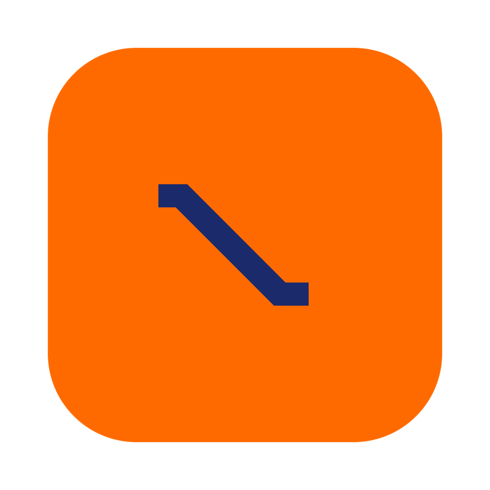
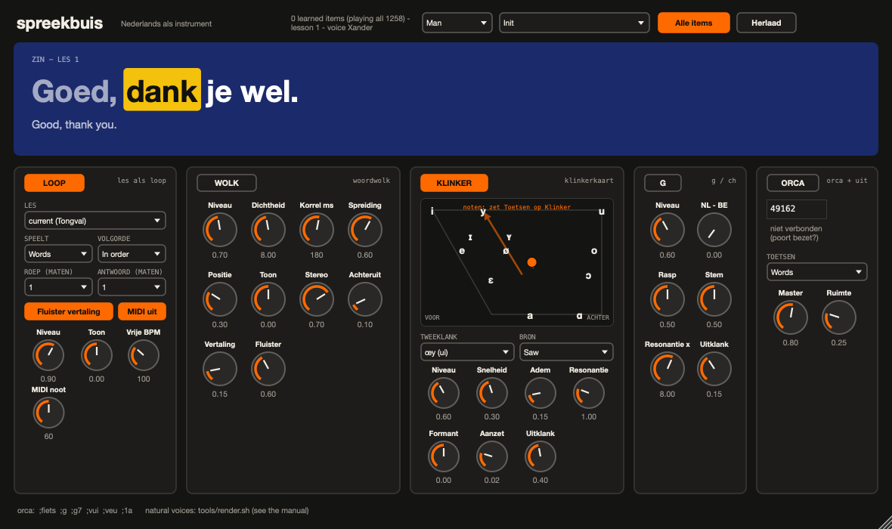

Spreekbuis plays the Dutch you are learning in Tongval as sound material. Every word, sentence and dialogue line from the course is recorded with a real Dutch voice, and the plug-in turns them into loops, grain clouds, vowel drones and throat noise you can use in a track.
It works in two directions. While you make music, you hear and repeat the words you are studying. And every word you play is logged, so Tongval can show it as heard in your music and give you a little listening XP.
It has five layers that you can mix freely, each with its own on/off button:
| Layer | Dutch label | What it does |
|---|---|---|
| Loop | LOOP | The current lesson as tempo-synced call and response, with karaoke text and MIDI out. |
| Word cloud | WOLK | Granular cloud of the words you know, with whispered English translations. |
| Vowel pad | KLINKER | Formant filter controlled by the Dutch vowel chart. |
| G generator | G | The Dutch g/ch as a playable, pitched noise. |
| Orca bridge | ORCA | Trigger words, vowels and the g from Orca over UDP. |
There is no microphone or speech-recognition part: Spreekbuis only speaks, it doesn't listen.
| Area | What it shows / does |
|---|---|
| Top bar | Status: how many items you've learned, how many are playing, the current lesson and the Dutch voice in use. Then the preset menu, Alle items (all items on/off) and Herlaad (reload your Tongval progress and the voice bank). |
| Karaoke line | The item the loop is playing: kind and lesson (e.g. ZIN — LES 1), the Dutch with the current word highlighted in yellow, and the English underneath. |
| Layer panels | LOOP, WOLK, KLINKER, G and ORCA. Click a layer's name button to turn it on (orange) or off. |
| Bottom line | A reminder of the Orca message syntax and the voice re-render command. |
The window can be resized; everything scales. The plug-in is dark-only.
All course items (words, sentences, dialogue lines and Lesson 0's sounds) are recorded as audio, with the timing of every word, in the voice bank folder (see section 12). English glosses are recorded too, for the whisper layer. The bank is rendered on your machine by tools/render.sh with the system's Dutch text-to-speech (macOS, Windows and Linux; see section 12).
No bank yet? Spreekbuis then speaks every item with its built-in voice: the Klatt formant synthesizer it shares with Spraakmaker (made once, in voice-builtin/, the first time it loads; this takes a short while and the karaoke says so). It is a robot voice, intelligible rather than natural: render a real voice when you can.
At load, Spreekbuis reads Tongval's progress file and builds a bank of everything you have learned (words and sentences you've finished in lessons), plus the lesson you're currently on. Alle items ignores your progress and plays everything. After a study session in Tongval, press Herlaad to pick up the new words.
Every item Spreekbuis plays is logged in plays.json. The next time you open Tongval, words you've played show a ♪ count in the lesson word list and the dictionary, and you get listening XP: 1 XP per 5 plays, at most 30 XP a day. Hearing a word isn't the same as recalling it, so plays don't change your review schedule.
The loop plays one item per call, then leaves an answer gap for you to repeat it, locked to the host tempo. While the DAW is stopped (or in the standalone app) it runs at its own tempo, Vrije BPM. During the answer bars the English translation is whispered, if enabled.
| Control | Range | What it does |
|---|---|---|
| LOOP button | on/off | Turns the layer on (default on). |
| Les | current, 1–36 | Which lesson to loop. current (Tongval) follows your progress. |
| Speelt | Words · Sentences · Dialog · All | Which kind of items to play. |
| Volgorde | In order · Shuffle | Order of items. |
| Roep (maten) | 1 · 2 · 4 | Call length in bars: how long each item gets. |
| Antwoord (maten) | 0 · 1 · 2 · 4 | Answer gap in bars. 0 = continuous, no gaps. |
| Fluister vertaling | on/off | Whisper the English during the answer bars. |
| MIDI uit | on/off | Send a MIDI note at every word onset (VST3). |
| Niveau | 0–1.5 | Loop level. |
| Toon | ±12 st | Pitch of the voice. |
| Vrije BPM | 50–200 | Tempo when the host isn't playing. |
| MIDI noot | 24–96 | Note number of the MIDI out notes. |
A granular cloud made from the words in your bank: short slices of words scattered in time, pitch and stereo. Some grains can be English translations turned into whispers by a 12-band noise vocoder.
| Control | Range | What it does |
|---|---|---|
| Niveau | 0–1.5 | Cloud level. |
| Dichtheid | 0–80 | Grains per second. 0 = only grains you trigger with keys or Orca. |
| Korrel ms | 15–900 ms | Grain length. Long grains play whole words; short ones become texture. |
| Spreiding | 0–1 | Scatter: how much the start position wanders. |
| Positie | 0–1 | Where in each word grains start. |
| Toon | ±24 st | Grain pitch (also used for words played from keys and Orca). |
| Stereo | 0–1 | Stereo spread. |
| Achteruit | 0–1 | Share of grains played backwards. |
| Vertaling | 0–1 | Share of grains that are English translations. |
| Fluister | 0–1.5 | Level of the whispered translations (also used by the loop). |
A formant filter whose XY pad is the Dutch vowel chart, the same one linguists use: left–right is front–back of the tongue, top–bottom is closed–open mouth. Drag the dot to y (the uu of muur) or ø (the eu of neus) and you hear exactly the vowels Lesson 0 teaches, from a saw wave, noise or your own audio.
| Chart symbol | Dutch spelling | Example |
|---|---|---|
| i · y · u | ie · uu · oe | niet · muur · boek |
| ɪ · ʏ | i · u | vis · bus |
| e · ø · o | ee · eu · oo | twee · neus · boot |
| ə | e (weak) | de · lopen |
| ɛ · ɔ | e · o | bed · pot |
| a · ɑ | aa · a | maan · man |
| Control | Range | What it does |
|---|---|---|
| XY pad | front–back × close–open | The vowel. Automatable as Front-back and Close-open. |
| Tweeklank | Off · ɛi · œy · ʌu | Diphthong glide: the dot travels the path of ij/ei, ui or ou/au, as an LFO. |
| Bron | Saw · Noise · Input · Saw + Input | Sound source. Input uses the side-chain/input bus, so Spreekbuis works as a vowel effect. |
| Niveau | 0–1.5 | Level. |
| Snelheid | 0.02–8 Hz | Glide speed. |
| Adem | 0–1 | Breath noise mixed into the source. |
| Resonantie | 0.3–3 | Formant sharpness. |
| Formant | ±12 st | Shifts all formants: smaller or bigger "mouth". |
| Aanzet / Uitklank | attack / release | Envelope for notes played from keys. |
The throaty Dutch g/ch (as in goed, acht) as an instrument: filtered noise with a pitched resonance. Turn NL – BE from the hard, rasping Holland g to the soft, voiced Flemish g.
| Control | Range | What it does |
|---|---|---|
| Niveau | 0–1.5 | Level. |
| NL – BE | 0–1 | Holland /x/ (left) to Flemish /ɣ/ (right). |
| Rasp | 0–1 | Uvular scrape, the "throat-clearing" part. |
| Stem | 0–1 | Voicing: adds a buzz under the friction. |
| Resonantie × | 1–24 | Which harmonic of the played note the resonance sits on. |
| Uitklank | 0.01–2 s | Release. |
Spreekbuis listens for UDP messages on 127.0.0.1:49162 (change the port in the ORCA panel). Orca's ; operator sends whatever text follows it when banged, so you can sequence Dutch from an Orca grid. The panel shows whether the port is connected.
| Message | Effect |
|---|---|
;fiets | Speaks the word fiets, if it's in your bank. |
;g | Fires the g generator. |
;g7 | Fires the g, pitched up 7 semitones (base-36 digit: 0–9, a–z). |
;vui | Plays the vowel pad on that vowel. Names: i ie y uu u oe e ee eu o oo a aa ij ei ui ou au uh. |
;1a | Anything else is read as a base-36 number and plays that item from your bank. |
In Orca, set the UDP port to 49162 (or run Orca's UDP output to that port), write e.g. ;fiets next to a clock, and every bang says the word.
| Toetsen | MIDI notes play… |
|---|---|
| Words | An item from your bank (note number picks the item). |
| Vowel | The vowel pad at that pitch. |
| G | The g generator at that pitch. |
| Words + Vowel | Both. |
| Everything | Words, vowel pad and g together. |
| Preset | What it is |
|---|---|
| Init | Default settings: loop on, one call bar, one answer bar. |
| Les in de loop | Pure study: words of the current lesson with answer gaps. |
| Zinnen en echo | Sentences over two bars with long gaps, plus a sparse cloud and reverb. |
| Fluisterwolk | Dense cloud of short grains with many whispered translations. |
| Droomstaat | Slow, low cloud of long grains over an ou/au vowel drone. Keys play words and vowels. |
| Ui-drone | The ui diphthong as a breathy drone. |
| Klinkerkoor | Vowel choir on your input plus saw, gliding through ij/ei. |
| Harde g | Short, rasping Holland g on the keys: percussion. |
| Zachte g | Soft, voiced Flemish g with a longer tail. |
| Orca-woorden | Everything off except what Orca and the keys trigger. |
| What | Where |
|---|---|
| Plug-ins (macOS) | ~/Library/Audio/Plug-Ins/VST3/Spreekbuis.vst3, …/Components/Spreekbuis.component, app in /Applications |
| Plug-ins (Windows) | C:\Program Files\Common Files\VST3\Spreekbuis.vst3, Spreekbuis.exe anywhere |
| Plug-ins (Linux) | ~/.vst3/Spreekbuis.vst3, Spreekbuis standalone anywhere |
| Data folder | ~/Library/Application Support/Spreekbuis/ (macOS), %APPDATA%\Spreekbuis\ (Windows), ~/.config/Spreekbuis/ (Linux) |
| Voice bank | voice/, voice-female/ in the data folder (about 300 MB each); voice-builtin/ for the built-in voice; piper/, piper-voices/ for the Piper install |
| Play log | plays.json in the data folder |
| Tongval progress (read) | ~/Library/Application Support/Tongval/progress.json (macOS) |
| Source | github.com/femifleming/spreek (spreekbuis/) |
Neural voices (any OS, best): python3 spreekbuis/tools/render.py --setup-piper once installs Piper (a venv with piper-tts) and downloads the voices nl_NL-pim-medium (the man), nl_BE-nathalie-medium (the woman) and en_US-lessac-medium (the English glosses) from the rhasspy/piper-voices Hugging Face repo into the data folder (~200 MB). From then on render.sh prefers Piper over the system voices; an existing Piper (the Tongval venv on this Mac, PIPER_PYTHON, PIPER_VOICES, a piper binary) is reused.
macOS: spreekbuis/tools/render.sh records every item with the best installed Dutch voice (Premium, then Enhanced, then the compact one) and exact word onsets. To upgrade the voice: System Settings → Accessibility → Spoken Content → System voice → Manage Voices → Dutch → download Xander (Enhanced) or Claire (Premium). Then run render.sh --force and press Herlaad. --female renders the woman's bank (Stem: Vrouw), --stories adds the Tongval stories.
Windows: python tools\render.py uses the Windows voices (Settings → Time & language → Speech → Manage voices → add Dutch). Linux: the same script uses piper (set PIPER_MODEL to a Dutch .onnx model) or espeak-ng -v nl. On these platforms word onsets are estimated from the audio.